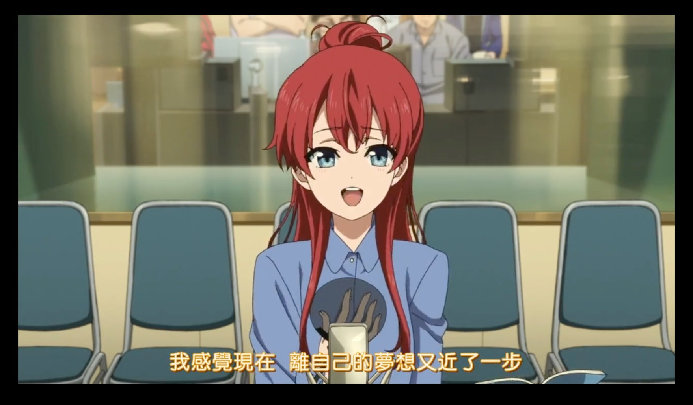
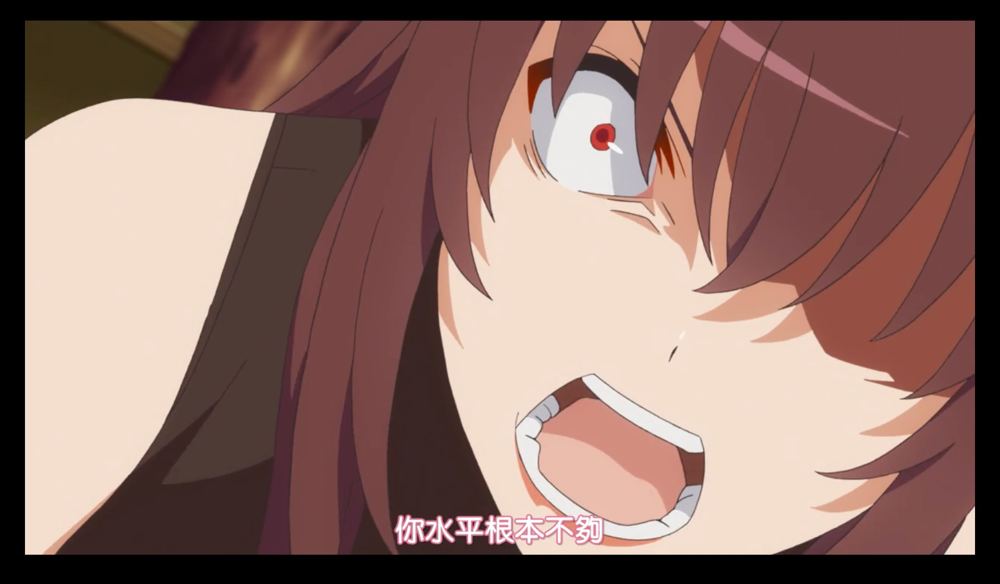

立ち上がるだけ 立ち上がるだけ 「LIVEWELL/椎名もた」
今年比去年少了很多烦恼，总体上过得还挺舒畅。
工作
去年升了 L4 后，加上今年改成 GRAD，并且手上的项目没有 fully launch，所以今年就没考虑过升级的事。
去年开始就一直做一个升级一个基础 UI 组件的项目，因为这个组件被许多 feature team 使用，所以要先在一些 feature 上试验，接着根据反馈，优化 UI，继续在那些 feature 试验，如此反复，再将这个组件用于其它 feature。鉴于 Chrome 已经 4 周发布一个大版本，所以相较于以前的 6 周，能更快地获得用户的反馈，以及及早发现一些 bug。可即便如此，来来回回依旧是一年也没弄完。
另一件就是 Android 13 的发布，因为一些 API 被 deprecated 了，而恰好这个 API 我们非常依赖且被许多 feature 使用，所以花了点时间去 migrate 到新的 API 上。这个是年中开始的，且也进行了 A/B test。不过这过程没有一帆风顺，中间还是发现了些 bug，在修复后继续在后续几个大版本上重复试验。
可能对工作开始感到厌倦，有时候还是挺想逃避问题的，在一些摸不清头绪的 bug 面前，会想要摸鱼耗时间到下班后把问题丢到第二天。「逃避可耻且没用」，一方面 bug 就在那里，不去修就不会消失，另一方面，几年搬砖下来，也渐渐意识到 「The monster you are facing is actually toothless」。其实大部分我能搞出的莫名其妙的问题，最后发现也不过如此。
今年下半年有一波裁员潮，因为自己这边暂时没影响，所以也没太放在心上。但照这经济情况下去，多少还是对明年有些担忧。
生活
设备
本来今年没想要换电脑的，但万万没想到偏偏在三年之期时，电脑变砖了。我清楚记得这个设备是 2019 的黑五期间买的，而现在因为它变砖了，我也只能借着这个黑五继续入一个 mbp。其实以前还想过换 PC 的，但因为坏得太突然，数据以 Time Machine 的形式存在硬盘里，所以只能作罢，继续用 Mac。
完了，蠢材吧说这台机器变砖了
— lazzzis (@lazzzis) November 20, 2022
动漫
总结。12 月因为假期所以看得多了点。但印象最深的是以下几部。
白箱
对于动漫制作的感兴趣的人不得不补的神作。几年前就知道这部剧，但当时动漫制作不感兴趣，所以没看。想补这部的契机是因为多次在 nbht 的视频里出现（
いま、私、少しだけ夢に近づきました
这个画面加上这句台词，着实让我泪崩。
路人女主的养成方法
虽然是后宫，但其中对作为 “创作者” 的她们的描写，更加令我印象深刻。印象最深的就是英梨梨被紅坂朱音怒斥 “你水平压根不够” 的情节。
你水平压根不够
即便是自以为是突破了瓶颈期的天才画家，竟也有被碾压和怀疑人生的时候。“天赋，努力，瓶颈期” 是三个老生常谈的问题了，这些到底是原因，还是结果，抑或是借口？
四叠半时光机布鲁斯
有趣！
阅读
藤本タツキ
在电锯人开播前，补完了电锯人第一部和他的另外两部单行本《Look Back》和《再见绘梨》。
关于《再见绘梨》的解读，我推荐 松野小路的动画笔记 的解读。
《再见绘梨》里有一句台词 “在结尾加上一句奇幻色彩”。看到这句话时，我其实想到的是我在 2020 年看的且也在年终总结里提到的「月曜日の友達」。这部作品虽然故事内容和画风上和《再见绘梨》截然不同，但都在一个看似正常的故事里加入了一个魔幻又美妙的结尾。同样值得推荐！
其它
今年阅读量相对偏少了点，能讲出来总共就四本《克拉拉与太阳》《牧羊少年奇幻之旅》《When Panic Attacks》《存在主义咖啡馆》。
前两部是小说，《克拉拉与太阳》非常值得推荐。《牧羊少年奇幻之旅》则因为其中莫名其妙的宗教部分而不是很喜欢。《When Panic Attacks》是心理调节的，里面列举了很多方法，其中有一些确实管用，但有一些则见仁见智了。《存在主义咖啡馆》这部有点像传记，读完后印象不深，不做评价。
游戏
玩得最多的依旧是 Splatoon。不过 3 代现在还是有点失望。虽然肉眼可见在 UI 等细节上有很多提升，但核心部分的 PVP 现在很糟糕：看似武器数量很多，但大多是外表时髦的垃圾，能用的并不多，反倒不如 2 代末期的平衡。新增的 Big Run 则是大型内卷现场。
兴趣
音乐
我特地翻了我以前的年终总结，发现早在 2016 年末就非常骄傲地说要学习音乐。现在在看当时的文章，那语气实在是太中二了！
就结果而言，从 2017 年开始到现在，我
- 买了两次布鲁斯口琴（2018 年 和 2021 年）。但学了几个月后就没下文了，原因未知
- 买了一次电吉他（2017 年），还是 Fender Squier Stratocaster Pack。但不知学了多久也没下文了，大概是因为学业和找工作的关系。反正最后是在毕业时送人了
- 买了一把 Acoustic Bass（2019 年）。我还挺中意 Bass 的，尤其是听了 T-Square 和 Casiopea 为首的日本 Fusion Jazz 后。但这个甚至在一首曲子都没学会的情况下就放弃了。原因好像是当时心情抑郁，啥都不想干
而今年，基于某些巧合（或是良机？），我又入了一把 Acoustic Guitar。但这次真的感觉到和前几次质的不同。
虽然总有人调侃有些流行的吉他民谣很没技术含量，翻来覆去就是 1645，但是在我看来，这些曲子恰好是很好的入门材料。它们简单易上手，随便学几下就能弹个段子，对提升自信心来说，是非常的有帮助。同样是简单的曲子，我觉得 Bass 的一个问题就是在这些曲子里，Bass 只能弹根音。虽然说把握好节奏弹好根音确实也需要点功夫，但相比之下，对初学者的我来说，Bass 初学时的乐趣真的少很多 – 简单的无聊，难的又太难。
另一方面，吉他真地有好多人玩呀！因为基数大，相对应的，教程是真地丰富，即便抛开 YTB，仅 B 站上每天就有很多曲子的教程和零基础的教程。就好比当初学编程，大部分人都是从 C/Java/Python 开始的，一方面确实简单，另一方面，资料也确实多呀！遇到什么问题，把报错放到网上，能搜到答案的概率也大很多。你硬要说，有人是从 Closure 和 Erlang 入门的，当然有，但大部分人还是会选择资料多的入手。当然，和选择具体哪个编程语言还会考虑实用性一样，吉他的实用性也确实多，弹唱有很多风格曲子可以选，指弹也是，以押尾为首的日系指弹也是很多人的入门原因。
虽然今年学的过程中磕磕绊绊有时候能因为一两个和弦转换磕上个三四天，，而且自己五音不全还要想办法学习一下唱歌，但却依旧觉得很有意思。即便有些真的很简单，可这就如同初学编程时敲出 “Hello World!” 一样，让人感觉神奇和欲罢不能。
木吉他也算是对成人非常友好的乐器了，相比于一些需要吃 “童子功” 的乐器来说，真的很容易上手了。
顺便推荐，今年听的比较多的曲目。首先是 Ryosuke Watanabe/渡辺良介 的专辑《Clear》。这是他的第一张专辑。此人是 2017 年的日本指弹冠军。这张专辑中的曲子我也是来回听了很多次，包括工作中也是很好的 BGM。
另一首是玉腰向輝的曲目。虽然没有在 2018 年拿到冠军，但我觉得这首曲子的完成度很高，是可以拿冠军的，但可惜失误有点多，尤其开篇时频繁打品，或许正是因此而错失冠军。即便如此，他在弹奏时沉浸于曲目中的表情和神态，仿佛在说：弹吉他真他妈开心！
画画
感觉时间不够用了 —— 搁置。以后再入门一次。
日语
错过了 N2 报名时间。准备明年直接冲击 N1 试试。
前端
在 6 月和 7 月的时候发现自己有段时间没弄前端了，于是去读了一些开源项目的代码，并成功提交了一些 pr。不过之后就又没怎么弄了。
それから
明年的话，把今年错过的补上，以及把现在手头的坚持下去，我想就不错了。至于更细节的目标，慢慢规划吧。